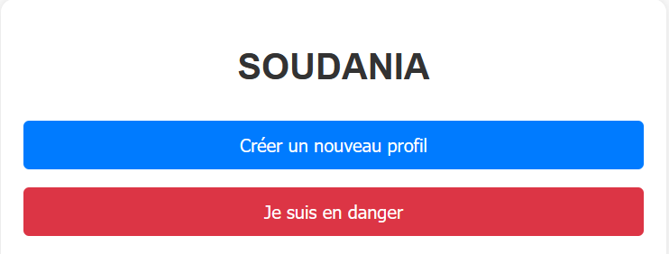

Réalisations récentes
Voici quelques projets que j'ai conçus ou auxquels j'ai contribué récemment.

SOUDANIA est une application web conçue pour renforcer la sécurité des femmes et des personnes en situation de danger. Elle combine identification de l’utilisateur, géolocalisation en temps réel et système d’alerte rapide à destination des services d’urgence (police et centres de santé les plus proches). Dès la première utilisation, l'application demande à l'utilisateur de renseigner ses informations personnelles essentielles : nom, prénom, date et lieu de naissance, situation matrimoniale, et un contact d'urgence. Ces données permettent une identification rapide en cas d’incident. Lorsqu’un utilisateur se sent en danger, il peut appuyer sur le bouton "Je suis en danger". L’application utilise alors la géolocalisation pour identifier les postes de police et centres de santé les plus proches, à qui elle envoie immédiatement une alerte contenant la position exacte de la personne en détresse. SOUDANIA se veut simple, rapide et efficace : une solution numérique au service de la sécurité, accessible à tous...
SOUDANIA - Alerte pour femmes en danger
Description de l'application SOUDANIA
SOUDANIA est une application web conçue pour renforcer la sécurité des femmes et des personnes en situation de danger. Elle combine identification de l’utilisateur, géolocalisation en temps réel et système d’alerte rapide à destination des services d’urgence (police et centres de santé les plus proches). Dès la première utilisation, l'application demande à l'utilisateur de renseigner ses informations personnelles essentielles : nom, prénom, date et lieu de naissance, situation matrimoniale, et un contact d'urgence. Ces données permettent une identification rapide en cas d’incident. Lorsqu’un utilisateur se sent en danger, il peut appuyer sur le bouton "Je suis en danger". L’application utilise alors la géolocalisation pour identifier les postes de police et centres de santé les plus proches, à qui elle envoie immédiatement une alerte contenant la position exacte de la personne en détresse. SOUDANIA se veut simple, rapide et efficace : une solution numérique au service de la sécurité, accessible à tous...
Technologies : HTML, CSS, JS, API de géolocalisation
Voir le projet
Projet 2
Description de l’application Zen-Job
Zen-Job est une application innovante spécialement conçue pour faciliter l’accès à l’emploi pour les étudiants en quête d’opportunités professionnelles flexibles et adaptées à leur emploi du temps académique. Grâce à une interface intuitive et un système de recherche intelligent, Zen-Job met en relation les étudiants avec des offres d’emploi temporaires, à temps partiel ou en freelance dans divers secteurs : services, vente, communication, assistance administrative, événementiel, etc. L’étudiant peut créer un profil personnalisé, précisant ses compétences, sa disponibilité et ses préférences professionnelles. En retour, l’application lui propose des offres ciblées et géolocalisées, consultables en un clic. Il peut également postuler directement depuis l’application. Zen-Job se veut un pont entre les besoins du monde professionnel et les aspirations des jeunes en formation, en leur offrant des opportunités concrètes pour gagner de l’expérience, développer leurs compétences et financer leurs études. Lien GitHub / Démo
Projet 3
Description de la page Tobomtech
Tobomtech est une plateforme digitale dédiée à la promotion des technologies, de l’innovation locale et de la transformation numérique au Tchad et en Afrique. Elle a pour mission de vulgariser les outils technologiques, de valoriser les talents digitaux et de soutenir les initiatives entrepreneuriales à fort impact social. À travers des contenus variés (articles, tutoriels, interviews, projets, formations), Tobomtech informe, forme et connecte une communauté de jeunes passionnés de numérique, développeurs, entrepreneurs, étudiants et acteurs du changement. La page Tobomtech est également un espace de découverte des start-ups locales, d’analyse des enjeux tech du continent, et de mise en lumière des innovations qui façonnent l’Afrique de demain. Tobomtech, c’est la tech au service du développement et de l’inclusion. Lien GitHub / Démo